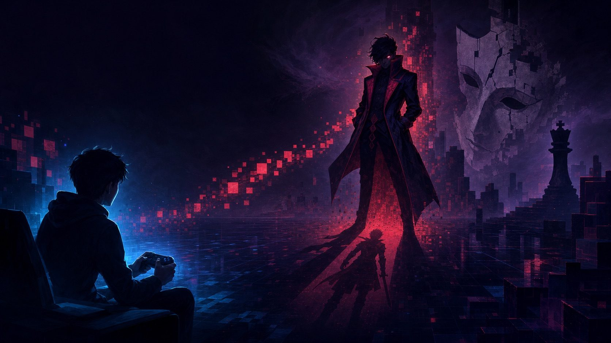

Why do we love the villain? The psychoanalysis of the dark side

Admit it: you've rooted, even just a little, for the villain. You've found the antagonist more interesting than the squeaky-clean hero. You've wished that arrogant line would last a moment longer. That doesn't make you a bad person, it makes you a person with an unconscious. The fascination with the villain is one of the most revealing things games (and stories in general) stir up in us, and psychoanalysis has an elegant explanation for it.
The villain does what we won't let ourselves do
Freud divided the mind, in simplified terms, into three forces: the id (raw desire, the "I want it now"), the superego (the internalized law, the "you can't"), and the ego (which negotiates between the two so we can live in society). Civilized life demands that we repress a good part of the id, that we swallow the impulse to scream, to dominate, to transgress. The villain, on screen, is the character who doesn't repress. They do, say, and take whatever they want. And when we watch this, we feel a secret relief: someone finally let loose what all of us hold in.
The pleasure of watching the law break
There's a specific jouissance in watching the rule be broken without our paying the price. The villain transgresses, and we, safe over here, experience by proxy what would be far too forbidden to live. It's the same mechanism that makes the repressed return in disguise: whatever we push down into the depths doesn't vanish, and comes back with force when it finds a figure to embody it. The villain is that figure. They give a face, a voice, and a style to our most untamable impulses, and that's why they stick in the memory far more than the good guy does.
Why the best villains seem to "have a point"
Notice that the most memorable antagonists in games are rarely evil for the sake of being evil. They have a logic, a wound, sometimes an argument that unsettles because it holds a grain of truth. That's what makes them disturbing in a good way: they mirror parts of us we'd rather not see. When a villain says something that resonates, the discomfort isn't with them, it's with the recognition. They're saying out loud what a part of us thinks and keeps quiet. Good fiction uses the antagonist as a mirror of our own dark side, what Jung would call the shadow and what Freud would locate in the territory of the repressed.
Loving the villain is knowing yourself
Here's the part that really matters: liking the villain isn't giving in to evil, it's making contact with your own complexity. Denying that we have aggressive, envious, transgressive impulses doesn't make them disappear, it only pushes them into the shadow, from where they act without our noticing. Fiction offers a safe place to look these parts in the face, with curiosity instead of panic. Rooting for the villain, for a few minutes, is a way of acknowledging: "this exists in me too." And acknowledging is the first step toward not being ruled by it.
The hero teaches, the villain reveals
Maybe that's the secret division of labor in every good story: the hero shows who we'd like to be, and the villain reveals what we hide. Both are necessary. A game with a weak villain is a game that doesn't challenge you from within. So the next time you catch yourself fascinated by the antagonist, don't be ashamed, take it as an invitation. They're showing you a piece of yourself. And looking at that piece from the best seat in the house, at no risk, is one of the rare privileges fiction offers.
Enjoy this kind of read, psychoanalysis mixed with games? Over on my Mercado Livre profile I leave picks of games worth analyzing. 😉
My picks (Mercado Livre) Affiliate links (Mercado Livre). This site may earn a commission on qualifying purchases, at no extra cost to you.Related
BioShock: "Would you kindly" and the illusion of free will Why is GTA so addictive? Psychoanalysis explainsReferences
Freud, S., the second topography: id, ego and superego (The Ego and the Id, 1923). · Freud, S., the return of the repressed (Repression, 1915).
Comments
What did you think of this piece? Agree, disagree, have another reading of the game? Drop a comment below, I read them all and love keeping the conversation going. 👇